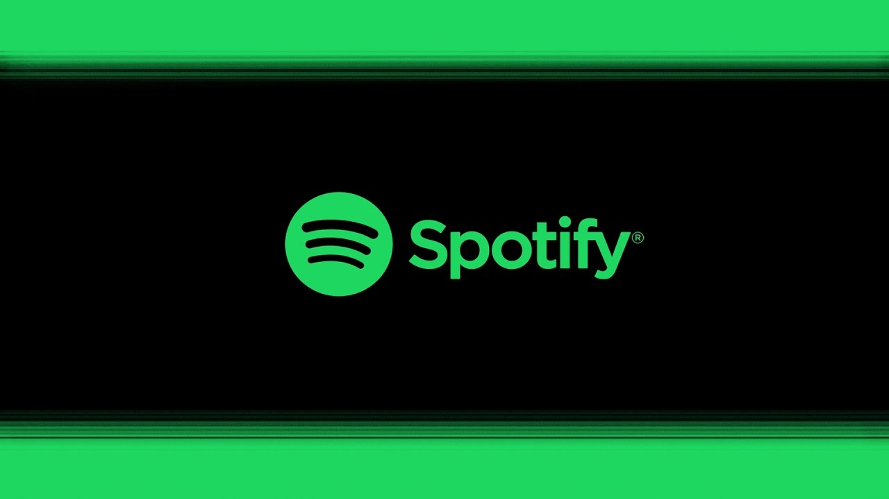

Unterwegs Musik zu hören ist heutzutage einfach wie nie. Man benötigt nur ein Smartphone oder Tablet und lädt eine der vielen Musikstreaming-Apps runter. Im folgenden werden 4 von vielen vorgestellt.

Spotify
Einer der bekanntesten und meistgenutzten Musikstreaming-Anbieter.
YouTube Music
Nach der Bekanntgabe der Einstellung des Musicstreaming-Dienstes
Google Play Music, stellte Google den Streaming Dienst YouTube Music vor, welche
Videos von YouTube zum Streaming miteinbezieht.
Apple Music
Nach dem Erfolg vieler anderer Streamingdienste, wollte Apple ebenfalls
mitmischen und ist mit seinem Streamingdienst Apple Music miteingestiegen.
Deezer
Ein eher dürftiger Streaming Dienst der zusätzlich zu seinem Bezahlmodell
eine kostenlose Variante mit Download-Möglichkeit anbietet.
Die Website myPod beschäftigt sich mit dem Thema "iPod" und "unterwegs Musik hören" und verbindet diese mit Fotografie.